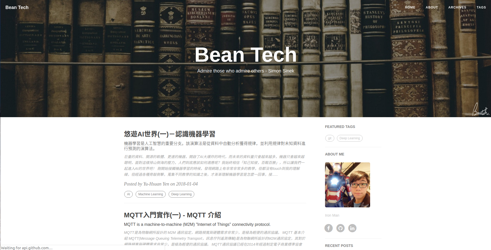

本文介绍一种基于Hexo框架和Github Page服务搭建博客的方法，其中还将原始的Github page指向了自有域名。
Page服务配置
将静态网页同时部署到Github和国内coding
Github
安装git,ssh
1 | $ sudo apt-get install git |
配置git用户名和邮箱
1 | $ git config --global user.name "your name" |
配置SSH，参考 ，如下：
创建SSH key
1 | $ ssh-keygen -t rsa -b 4096 -C "your email" |
将~/.ssh/id_rsa.pub内容添加到Github-Setting-SSH keys
验证github SSH连接
1 | $ ssh -T git@github.com |
more Info Github SSH文档.
配置完Github后，创建Github库xxx.github.io，其中Github Page库的名称必须为xx.github.io
Coding
Coding是国内的代码托管网站，部署到coding可以避免博客访问速度不稳定等问题，注册登录Coding，为了方便，建立github中的同名项目，在项目-构建与部署-静态网站中开启服务，并绑定到自有域名。同时在自有域名解析中添加一条新的CNAME，指向coding page生成的网址。
在博客_config.yml配置文件中同时配置github和coding部署，如：
1 | deploy: |
同时配置SSH
使用ssh地址+配置SSH公钥可以实现部署时不需要输入密码
生成SSH公钥：
1 | $ ssh-keygen -t rsa -C "your email" |
在生成SSH时会提示选择保存路径可以量Github和coding的公钥都保存在~/.ssh目录下，并重命名coding公钥为“my-coding”，并在.ssh/下新建配置文件
1 | touch ~/.ssh/config |
配置文件具体内容如下：
1 | # github |
使用自有域名
- 万网或godaddy购买域名，由于国内备案麻烦谨慎购买.cn域名，除.com常见的域名有.cc，.me，.top，.club等。
- 万网域名自动使用hichina云解析(若使用godaddy，为了加快解析速度，防止被墙，可将 DNS 服务器可设置为为DNSPod)
- 添加两条解析，使得访问“xxx.com”和“www.xxx.com”时均能够解析域名
主机记录@，记录类型CNAME，解析线路默认，记录值littlepeanut.github.io.，TTL1小时；主机记录www，记录类型A，解析线路默认，记录值185.199.109.153，TTL1小时(主机IP可直接ping域名得到) - 今后可根据需要添加二级域名
- 在博客中source和public中添加CNAME，记录域名littlepeanut.top，将本地和Github Page上的Hexo绑定到自有域名
- 若在Github Page中使用自有域名，一般在一天后才能在库的Setting中开启HTTPS
Hexo使用
Hexo是一个常见的静态博客框架.
首先参考 Hexo中文文档安装Hexo，注意文档中提到在安装时尽量不要使用sudo
安装npm和Node.js，验证
1 | $ node -v |
下面初始化博客
1 | $ hexo init myblog |
安装git管理扩展
1 | $ npm i hexo-deployer-git |
新建文章，存放在~/source/_posts
1 | $ hexo n "article title" == hexo new "article title" |
生成静态网页
1 | $ hexo g |
启动服务，可本地预览
1 | $ hexo s |
部署
1 | hexo d |
修改配置文件_config.yml，首先更改url和root，若不修改，即使在本地服务网页能够正常显示，部署后仍无法识别css等文件，具体修改规则如下：
如果域名是https://xxx.com：
1 | url: https://xxx.com/ |
如果域名是https://xxx.com/blog：
1 | url: https://xxx.com/blog |
如果域名是https://yourID.github.io/blog：
1 | url: https://yourID.github.io/blog |
如果域名是https://yourID.github.io：
1 | url: https://yourID.github.io/blog |
同样还须在_config.yml中设置部署的git库地址
1 | deploy: |
其他常用Hexo命令
1 | $ npm update hexo -g #升级 |
在一般情况下更新博客时，重新生成下静态博客并部署到Github上即可，使用的操作如下：
1 | $ hexo clean |
使用Bentech主题效果如下所示。

备份博客源代码
使用hexo d将hexo部署到Github Page中后，只是将静态博客上传，并没有保存博客的源代码，为了方便在不同终端电脑上对博客格式和内容进行修改，这里将博客所有源代码同时保存到Github中，具体是将源代码保存到我们GIthub Page项目的分支中。
- 在网页端添加hexo分支，并将其设置为主分支，在切换到hexo分支后
- 将项目clone到本地，取出clone的项目的.git文件夹放到博客的根目录下
- 将代码上传到hexo分支中
1 | $ git checkout hexo |